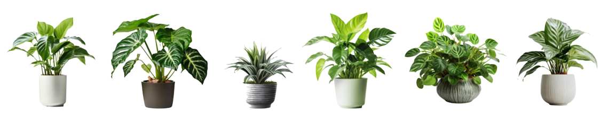

Las experiencias ancestrales acumuladas en el tiempo, su accesibilidad, sus costos bajos, convierten a la medicina herbaria en la alternativa principal para la atención primaria de su salud, hechos que han permitido que estas prácticas se mantengan hasta la actualidad. En Ecuador se establece como política de estado el fortalecer y consolidar la salud intercultural, incorporando la medicina ancestral y alternativa al Sistema Nacional de Salud, que busca entre otras cosas diseñar y aplicar protocolos para facilitar la implementación progresiva de la medicina ancestral y alternativa, con visión holística, en los servicios de salud pública y privada (10). 